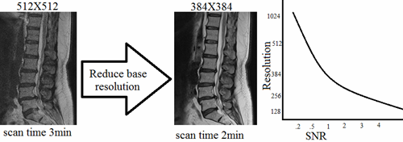
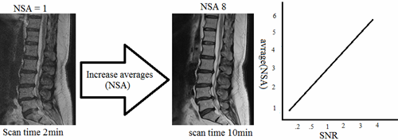
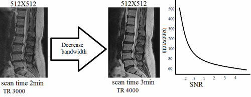
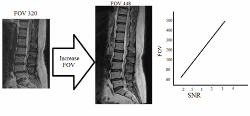

|
Introduction Resolution is the ability of human eyes to distinguish one structure from other. In MRI the resolution is determined by the number of pixels in a specified FOV. The higher the image resolution, the better the small pathologies can be diagnosed. Resolution is directly proportional to the number of pixels (The higher the number of pixels the greater the resolution). Pixel size can be calculated by dividing the field of view by the matrix size (e.g.FOV 320, Matrix 320x320, Pixel size =320/320=1mm). There are two resolution parameters used in MRI for the production of a two dimensional image i.e. basic resolution and phase resolution. Basic resolution
SNR and Basic resolution Signal to noise ratio (SNR) is inversely proportional to the basic resolution. In other words SNR is directly proportional to the pixel size. Increasing the base resolution will reduce the pixel size therefore the SNR of the image will be reduced.
If we compare a 256 x 256 and 128 x 128 matrix format, the pixel size of 128(2x2mm) matrix is four times larger than the 256(1x1mm) matrix but there is only half phase encoding steps (lines in the k space). Therefore the SNR is calculated by 4/√2 =2.82
Increasing the basic resolution will increase the image quality. Increasing the resolution more than the acceptable range will produce grains in the image due to low SNR and reducing it more than the acceptable range will produce a blurry image due to high SNR. Increasing basic resolution will result in a prolonged scan time.
How to manipulate a grainy image? Reduce the base resolution by one or two steps. Reducing base resolution will reduce the scan time. 
Increase average (NSA).increasing NSA will increase the scan time.  Decrease bandwidth. Decreasing bandwidth will increase the TR and TE therefore it will increase the scan time.  Increase FOV. Increasing FOV increase the pixel size and SNR therefore the image will become smoother.  How to manipulate a low resolution blurred image? Increase the base resolution by one or two steps. Increasing base resolution will prolong the scan time.
Decrease FOV. Decreasing FOV reduces the pixel size and SNR therefore the image will become sharper.
SNR and Basic resolution Phase resolution is the number of pixels in the phase direction. Phase resolution normally expressed as a percentage value of the basic resolution. Decreasing phase resolution will increase the pixel size in one direction and result in a rectangular pixel shape.
Decreasing phase resolution will reduce the image quality and scan time. Reducing phase resolution will increase the pixel size therefore the SNR will increase considerably.
In addition to the basic resolution image quality can be manipulated by changing the phase resolution. Similar image quality can be obtain from 384x384 matrixes and 512x256 matrixes.
|


.png)